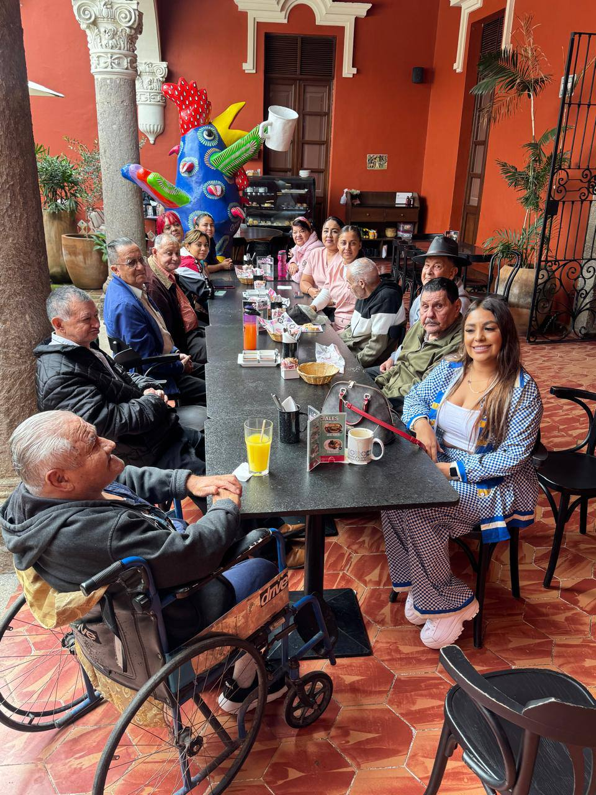
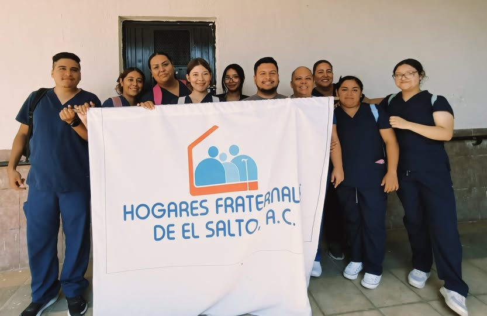
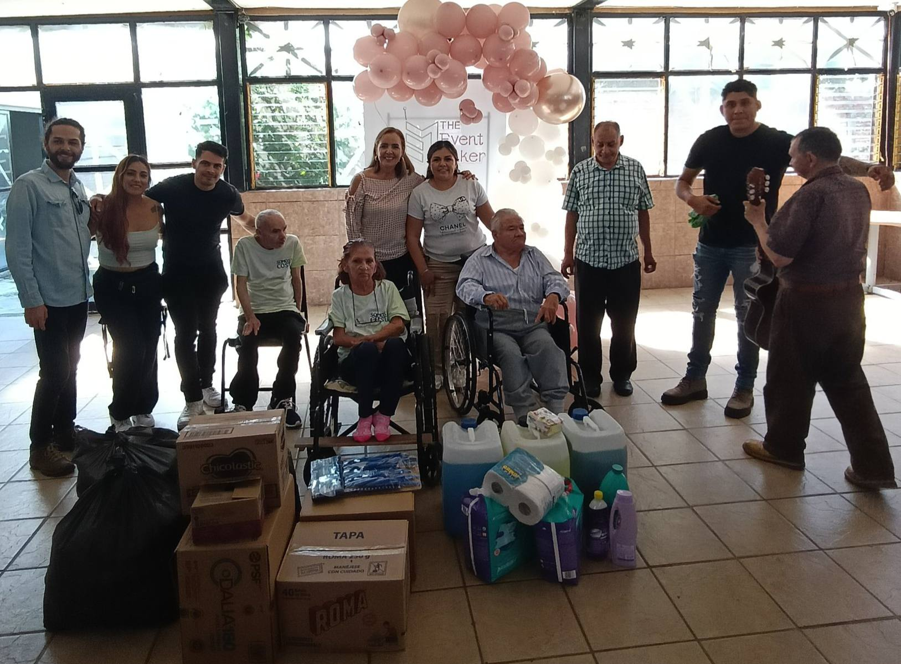

Nuestros Valores

Respeto, Amor, Honestidad, Transparencia y Solidaridad son los pilares que guían todas nuestras acciones.
Un lugar de amor, cuidado y esperanza para nuestros adultos mayores
Somos una asociación sin fines de lucro dedicada a brindar cuidado, amor y atención integral a los adultos mayores, especialmente a aquellos que se encuentran en situación de vulnerabilidad.
Nuestro compromiso es ofrecerles un hogar digno donde se sientan valorados y acompañados.
Respeto, Amor, Honestidad, Transparencia y Solidaridad son los pilares que guían todas nuestras acciones.

En Hogares Fraternales, creemos que la confianza se construye con honestidad y claridad. Por eso, mantenemos un compromiso firme con la transparencia en todas nuestras acciones, recursos y desiciones.
Cada donativo, apoyo o servicio recibido es utilizado de manera responsable para garantizar el bienestar, la atencion médica, la alimentacion y el cuidado digno de nuestros residentes.
Publicamos periódicamente los apoyos recibidos en nuestra pagina de facebook

Tu apoyo puede marcar una gran diferencia en la vida de nuestros adultos mayores. En Hogares Fraternales, cada gesto de generosidad se transforma en bienestar, compañia y esperanza. Existen muchas maneras de colaborar

En este día, realizamos una salida recreativa, actividad que se enfoca en la salud mental y emocional de nuestros adultos mayores.

Agradecemos a APH Internacional-Centro Educativo por la visita del día de hoy(25/10/2025) y la continúa apertura para sus estudiantes a brindar la mejor atención a nuestros adultos mayores.

si te gustaria apoyar a nuestros adultos mayores, ¡únete como voluntario!,toda ayuda nos beneficia y nos gustaria que tu nos apoyaras ,
si te interesea saber mas, ve al apartado de voluntariado ahi encontraras mas informacion